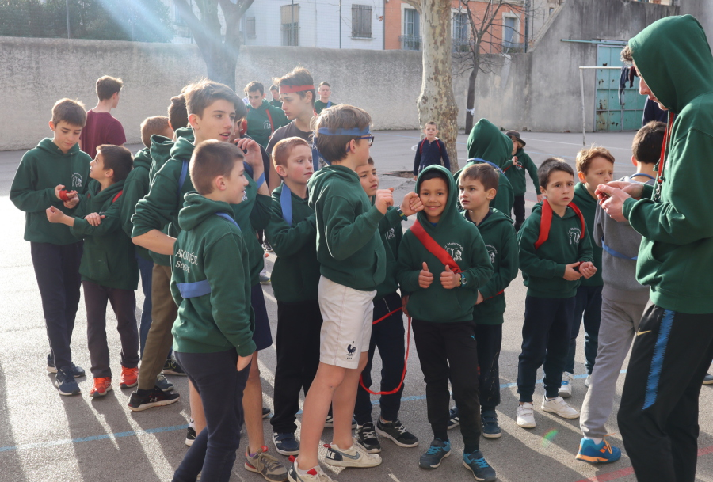
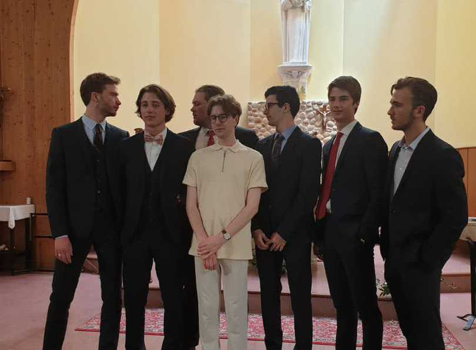

La Maisonnée, une œuvre de jeunesse
Depuis 1907, La Maisonnée Saint Joseph est à Montpellier un lieu d’éducation et d’accueil pour les jeunes. La frères de St Jean ont hérité de l'Oeuvre en Septembre 2009, après de longues années d'animation par les pères de Timon-David.
L'encadrement de la Maisonnée est surtout assuré par les "grands" qui connaissent bien, par de longues années d'expérience personnelle, sa vie et son esprit.
En collaboration avec les familles, elle entend contribuer à l'éducation humaine et religieuse des enfants. Elle cherche à les faire grandir dans tout leur être, par un "vivre-ensemble" où ils peuvent développer leurs talents personnels.
Le flyer de présentation de la Maisonnée St Jospeh est diponible ici.
Le mot du directeur
Notre jeunesse manque de repères, c'est pourquoi la Maisonnée offre aux garçons un lieu où ils peuvent s'exprimer par le jeu, expérimenter la joie du vivre-ensemble, du partage, du service et de la prise de responsabilité pour qu'ils deviennent sous le regard de Dieu des hommes heureux et responsables.
Le mot du coordinateur
En tant que coordinateur de la Maisonnée, j'assure le lien entre l'équipe des "grands", les parents des jeunes et les Frères. Mon rôle consiste à faciliter la circulation des informations, résoudre les petits soucis de manière à maintenir une atmosphère conviviale.
Les 10 commandements
- Le bon Dieu tu adoreras, alors dans ta vie il rayonnera.
- À Jésus tu parleras, alors en ami Il t'aidera.
- De Saint Joseph tu hériteras, alors en bon fils tu agiras.
- La Maisonnée sera à toi, si toi-même tu te donneras.
- Si autorité tu voudras, respect tu donneras.
- Dans le jeu tu te dépasseras, car la victoire se méritera.
- Moquerie ne passera pas, mais bonne blague s'appréciera.
- Responsable tu seras, si dans tes paroles et test actes tu ne mentiras pas et ne tricheras pas.
- Du matériel bon usage tu feras, sinon plus tard tu t'appauvriras.
- Quand la cloche sonneras, tu te hâteras.
Des grands
L’encadrement de La Maisonnée est assurée par les grands qui, connaissent bien, par de longues années d’expérience personnelle, sa vie et son esprit ; formés progressivement, par les réunions pédagogiques internes, à la prise de responsabilité, et passent, le moment venu, les diplômes officiels: BAFA, PS1, surveillant de baignade etc.
Des jeunes
"En réunissant ainsi des jeunes, qu’elle reçoit à partir de 6 ans dans le temps de leurs loisirs, La Maisonnée entend contribuer, en complément harmonique avec la famille et l’école, à leur éducation humaine. Elle contribue ainsi à la socialisation de l’enfant puis du jeune en le rendant mieux à même de se situer et de jouer un rôle dans les différents groupes auxquels il pourra participer comme adulte : former les jeunes pour eux d’abord, ensuite pour les autres."
Extrait du Projet Éducatif